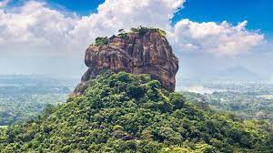
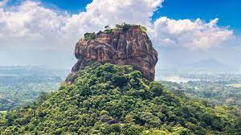
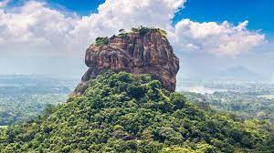
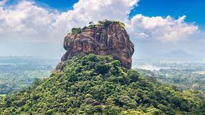

ANCIENT SIGIRIYA
 

 

Sigiriya is one of the most valuable historical monuments of Sri Lanka. Referred by locals as the Eighth Wonder of the World this ancient palace and fortress complex has significant archaeological importance and attracts thousands of tourists every year. It is probably the most visited tourist destination of Sri Lanka.
Sigiriya Lion Rock is an ancient rock fortress known for its massive column of rock that reaches nearly 200 meters high. The site dates back to the reign of King Kasyapa (477-495 AD), who chose this site as his new capital. He decorated the walls with frescoes, and built an impressive palace right on top of the rock column, accessible only through the mouth of an enormous carved lion.
Sigiriya is a town located in Sri Lanka’s North Central Province, a beautiful destination for travellers who have an avid interest in archeological ruins. A fortress, Sigiriya is encompassed with palaces and gardens that were built by King Kasyap in 5th century AD, post an unsuccessful attempt to kill & seize his Father and to prevent any future attacks. Sigiriya’s economy is totally tourism dependent. From serene boat rides to a stay in some beautiful destination hotels, from hiking, nature trails, hot air balloon rides to elephant safaris, here are some amazing things that you can enjoy at Sigiriya.While this really may not be an activity you can engage in, but it is a significant addition to your trip to Sigiriya. With Sri Lankan tourism being constantly worked on in terms of its service offerings, most luxury hotels have premium facilities and ambiance at low tariffs. For a 5-star or 4-star stay, you can expect a room rent of $100-$150 a night, in comparison to an exorbitant $500 somewhere else. Some mentionable properties in Sigiriya that would make your stay memorable include the Water Garden and Jetwing Lake Hotels, with beautiful views of Sigiriya Rock and villa-like rooms with either their private pools or a long swimming pool, with every room having a pool view, not to forget restaurants with buffet cuisines.